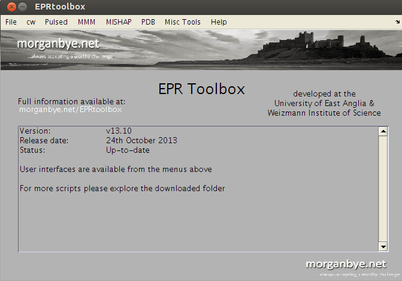

function varargout = EPRtoolbox(varargin)
gui_Singleton = 1;
gui_State = struct('gui_Name', mfilename, ...
'gui_Singleton', gui_Singleton, ...
'gui_OpeningFcn', @EPRtoolbox_OpeningFcn, ...
'gui_OutputFcn', @EPRtoolbox_OutputFcn, ...
'gui_LayoutFcn', [] , ...
'gui_Callback', []);
if nargin && ischar(varargin{1})
gui_State.gui_Callback = str2func(varargin{1});
end
if nargout
[varargout{1:nargout}] = gui_mainfcn(gui_State, varargin{:});
else
gui_mainfcn(gui_State, varargin{:});
end
function EPRtoolbox_OpeningFcn(hObject, eventdata, handles, varargin)
handles.output = hObject;
guidata(hObject, handles);
set(gcf,'Color',[0.702 0.702 0.702]);
logo_mb = which('mb_net.jpg');
logo_mb = imread(logo_mb);
axes(handles.logo_mb);
image(logo_mb);
axis off
logo_header = which('morganbye_header.jpg');
logo_header = imread(logo_header);
axes(handles.logo_header);
image(logo_header);
axis off
Warning = ' ';
Status = sprintf('Status:\t\tUp-to-date');
if now > datenum('2014-01-01')
Status = sprintf('Status:\t\tProbably out-of-date');
Warning = sprintf('EPR Toolbox is updated frequently with new features and bug fixes.\nYour version is over 3 months old, please consider upgrading.\n\nFor more information please see:\nmorganbye.net/eprtoolbox\n');
end
Version = sprintf('Version:\t\tv13.10');
Release = sprintf('Release date:\t24th October 2013');
Info = sprintf('User interfaces are available from the menus above\n\nFor more scripts please explore the downloaded folder');
startup_text = strvcat(Version, Release, Status, Warning, Info);
set(handles.editbox,'Max',2)
set(handles.editbox,'String',startup_text);
function varargout = EPRtoolbox_OutputFcn(hObject, eventdata, handles)
varargout{1} = handles.output;
function editbox_Callback(hObject, eventdata, handles)
function editbox_CreateFcn(hObject, eventdata, handles)
if ispc && isequal(get(hObject,'BackgroundColor'), get(0,'defaultUicontrolBackgroundColor'))
set(hObject,'BackgroundColor','white');
end
function File_Callback(hObject, eventdata, handles)
function File_load_Callback(hObject, eventdata, handles)
[file , directory] = uigetfile({'*.DTA;*.spc','Bruker File (*.DTA,*.spc)'; ...
'*.*', 'All Files (*.*)'},...
'Load Bruker file');
if isequal(file,0)
return
end
address = [directory,file];
[dir, name,extension] = fileparts(address);
switch extension
case 'DTA'
[x,y,z] = BrukerRead(address);
assignin('base','x',x)
assignin('base','y',y)
assignin('base','info',z)
case 'spc'
[x,y] = BrukerRead(address);
assignin('base','x',x)
assignin('base','y',y)
end
function File_convert1_Callback(hObject, eventdata, handles)
e2a;
function file_convertmany_Callback(hObject, eventdata, handles)
e2af;
function cw_Callback(hObject, eventdata, handles)
function cw_PowerSat_Callback(hObject, eventdata, handles)
PowerSat
function cw_Viewer_Callback(hObject, eventdata, handles)
cwViewer
function cw_EasyRefiner_Callback(hObject, eventdata, handles)
EasyRefiner
function PDB_Callback(hObject, eventdata, handles)
function PDB_Splitter_Callback(hObject, eventdata, handles)
PDBSplitter
function PDB_MMMtoPDB_Callback(hObject, eventdata, handles)
MMMRotamerToPDB
function MMM_Callback(hObject, eventdata, handles)
function MMM_PDBs_Callback(hObject, eventdata, handles)
function MMMplotter_2_Callback(hObject, eventdata, handles)
MMMplotter_2SLs
function MMMplotter_3_Callback(hObject, eventdata, handles)
MMMplotter_3SLs
function Pulsed_Callback(hObject, eventdata, handles)
function Pulsed_DA_Callback(hObject, eventdata, handles)
function Pulsed_DA_Extract_Callback(hObject, eventdata, handles)
DeerConverter
function Pulsed_DA_Copy_Callback(hObject, eventdata, handles)
DeerExtract
function Misc_Callback(hObject, eventdata, handles)
function misc_AAconverter_Callback(hObject, eventdata, handles)
AAconverter
function MISHAP_Callback(hObject, eventdata, handles)
function MISHAP_MISHAP_Callback(hObject, eventdata, handles)
function Help_Callback(hObject, eventdata, handles)
function Help_use_Callback(hObject, eventdata, handles)
l1 = sprintf('The EPR Toolbox has been designed to be as helpful and easy to use as is possible. For the most part users should be able to complete most tasks without the need for any former MATLAB knowledge.\n\nTo begin, select an item from one of the menus at the top of the window. The individual routines will then guide you through the process.\n\nFull documentation is available at morganbye.net/EPRtoolbox\n\nOr contact me at morgan.bye@weizmann.ac.il');
set(handles.editbox,'Max',2)
set(handles.editbox,'String',l1);
function Help_Doc_Callback(hObject, eventdata, handles)
loca = which('EPRtoolbox');
directory = fileparts(loca);
web([directory '/doc/index.html'],'-helpbrowser');
function Help_about_Callback(hObject, eventdata, handles)
l1 = sprintf('The EPR Toolbox has been developed by Morgan Bye during his time at the University of East Anglia, UK and Weizmann Institute of Science, IL. It is constantly in development and as such should be considered beta software\n\nThis software is distributed under a Creative Commons, non-commerical, share a-like license.\n\nPlease report any bugs, errors or requests to morgan.bye@weizmann.ac.il\n\nMore information can be found at morganbye.net/eprtoolbox\n\nLatest releases can also be found at sourceforge.net/projects/eprtoolbox\n\nLinks in the Command Window\n\n');
Links = sprintf('\n<a href="http://morganbye.net/eprtoolbox">morganbye.net/eprtoolbox</a>\n<a href="http://sourceforge.net/projects/eprtoolbox">sourceforge.net/projects/eprtoolbox</a>\n\n')
set(handles.editbox,'Max',2)
set(handles.editbox,'String',l1);
